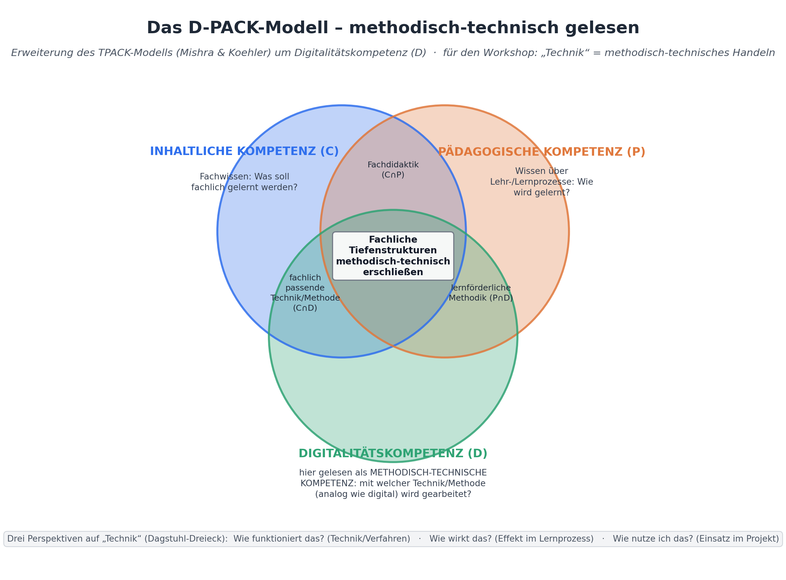
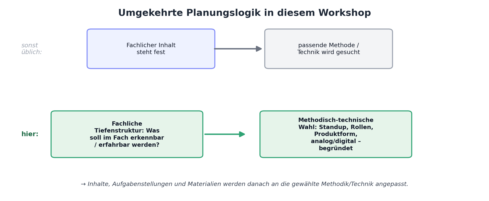

Pädagogischer Tag · Workshop
Workshop-Konzept für einen Pädagogischen Tag (90 Minuten) — Vorbereitung auf die Oberstufenreform NRW
⬇ Workshop-Unterlagen als PDF Zusatzmaterialien →| Zeit | Phase | Inhalt / Methode | Sozialform |
|---|---|---|---|
| 0–5 | Einstieg | Anlass: Oberstufenreform NRW / Projektkurse. Warum Projektlernen bereits in der Sek I eingeübt werden muss. | Plenum |
| 5–15 | Kurzinput 1 | eduScrum als Rahmenmethode: Rollen, Standups, Produktbacklog, Transparenz zwischen Gruppen | Plenum |
| 15–30 | Kurzinput 2 | Das D-PACK-Modell: Darstellung, Erläuterung, methodisch-technische Umdeutung, umgekehrte Planungslogik | Plenum |
| 30–38 | Arbeitsphase 1 | Thema wählen, Produkt definieren | Gruppen (3–4) |
| 38–48 | Arbeitsphase 2 | Qualitätskriterien für das Produkt erarbeiten + Reflexion: Wie erkennen Schüler:innen Qualitätskriterien selbst? | Gruppen |
| 48–53 | Praxiserprobung | Mini-Standup: Gruppen berichten sich gegenseitig ihren Planungsstand nach dem eduScrum-Muster | Gruppen, rotierend |
| 53–68 | Arbeitsphase 3 | Methodisch-technische Planung mit D-PACK: Tiefenstrukturen identifizieren, Methoden/Techniken wählen und begründen | Gruppen |
| 68–75 | Arbeitsphase 4 | Standup- und Rollenstruktur für die eigene Lerngruppe festlegen, Interventionsregeln klären | Gruppen |
| 75–85 | Sicherung | Kurzpräsentation / Gallery Walk der Projektideen mit Peer-Feedback | Plenum / Wandern |
| 85–90 | Abschluss | Blitzlicht: nächste Schritte, Transfer in die eigene Lerngruppe | Plenum |
Impulstext
Ein Team arbeitet in kurzen, überschaubaren Etappen (Sprints) auf ein konkretes Produkt hin und macht seinen Arbeitsstand regelmäßig für alle sichtbar. Zentrales Element ist das Standup: ein ca. fünfminütiges Treffen, in dem jedes Mitglied drei Fragen beantwortet — Was habe ich seit dem letzten Standup getan? Was werde ich bis zum nächsten Standup tun? Welche Hindernisse gibt es? Die Moderation rotiert: Jedes Mal führt ein anderes Gruppenmitglied durch die Runde.
Standups schaffen Transparenz — innerhalb der Gruppe und zwischen den Gruppen. Wird im Standup einer Gruppe eine Lösung vorgestellt, kann eine andere Gruppe mit demselben Problem direkt dorthin wechseln.
Jede Projektarbeit endet in einem Produkt, dessen Qualitätskriterien vorher gemeinsam erarbeitet und im Produktbacklog festgehalten werden. Die Lehrperson ist zugleich Scrum Master (Prozess) und Product Owner (fachliche Anforderungen).
Impulstext
D-PACK erweitert das bekannte TPACK-Modell (Mishra & Koehler): Statt technisches Wissen (T) isoliert zu betrachten, integriert D-PACK eine umfassendere Digitalitätskompetenz (D) — inkl. der Frage, wie eine Technik/Methode im Lernprozess wirkt und wie sie sinnvoll eingesetzt wird (Dagstuhl-Dreieck).
Für diesen Workshop wird „Technik“ bewusst weit gefasst: methodisch-technisches Handeln insgesamt — analog wie digital. Ein Standup ist ebenso „Technik“ wie ein digitales Whiteboard.
KI-Werkzeuge verändern das methodische Vorgehen oft noch deutlicher: Sie liefern fertige Inhalte, ohne die fachliche Tiefenstruktur automatisch mitzuliefern.


Vertiefende Fachbeispiele (auch mit KI-Einsatz), die ausführliche Vergleichstabelle „Ein Thema, zwei Planungsrichtungen“ sowie die Hintergründe zur umgekehrten Planungslogik stehen vollständig im PDF der Workshop-Unterlagen (oben) zur Verfügung.
Die Teilnehmenden arbeiten in Gruppen von 3–4 Personen (idealerweise fachlich gemischt oder je Fachschaft) und durchlaufen die folgenden Schritte.
Moderationshinweis — Mini-Standup (5 Min.)
Jede Gruppe führt jetzt selbst ein kurzes Standup zu ihrem eigenen Planungsstand durch — moderiert von einer Person, die noch nicht moderiert hat. Fragen: Was haben wir bisher geschafft? Was ist als Nächstes dran? Wo hakt es?
Kurzpräsentation / Gallery Walk (10 Min.): Jede Gruppe stellt ihr Projektvorhaben in maximal zwei Minuten vor (Thema, Produkt, ein Qualitätskriterium, eine methodisch-technische Begründung). Alternativ: Die Vorlagen hängen aus, alle gehen im Rundgang vorbei und geben je eine schriftliche Rückmeldung.
Abschlussrunde (5 Min.): Blitzlicht im Plenum: Was nehme ich konkret für meinen Unterricht mit? Welches Projekt möchte ich in den nächsten Wochen erproben? Wo brauche ich noch Austausch mit Kolleginnen und Kollegen?
Das PDF enthält zusätzlich alle Fachbeispiele (inkl. KI-Varianten), die vollständige Vergleichstabelle und alle Moderationshinweise.
⬇ Workshop-Unterlagen als PDF herunterladenVertiefendes Material zu E-Portfolio und weiteren eduScrum-Elementen — optional, auf einer eigenen Unterseite.
Zu den Zusatzmaterialien →